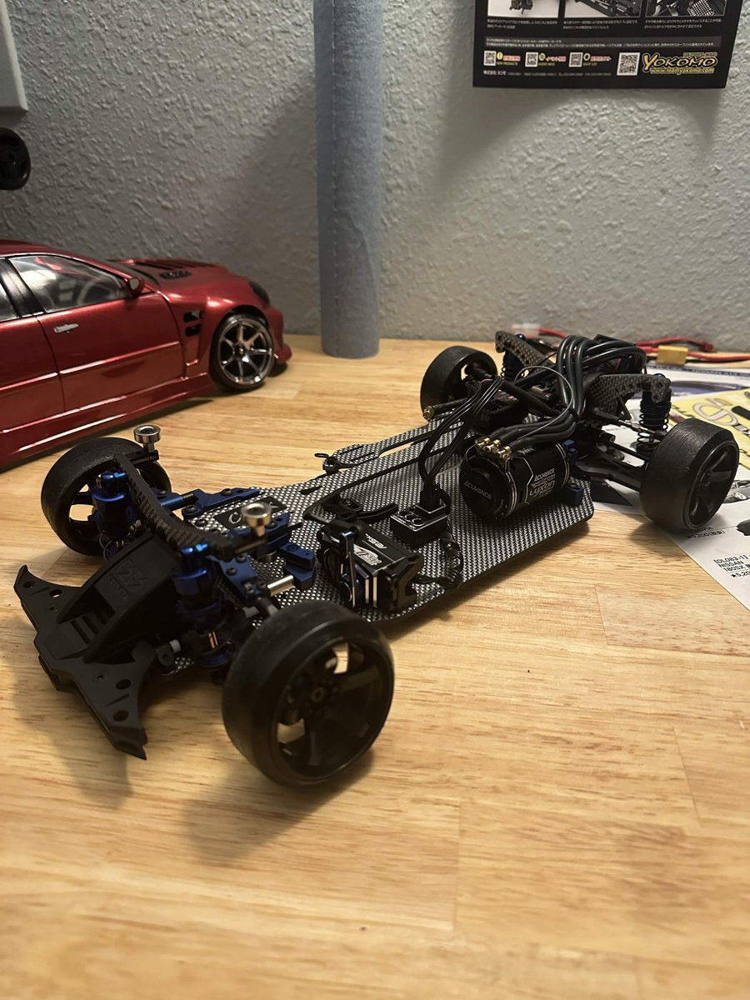
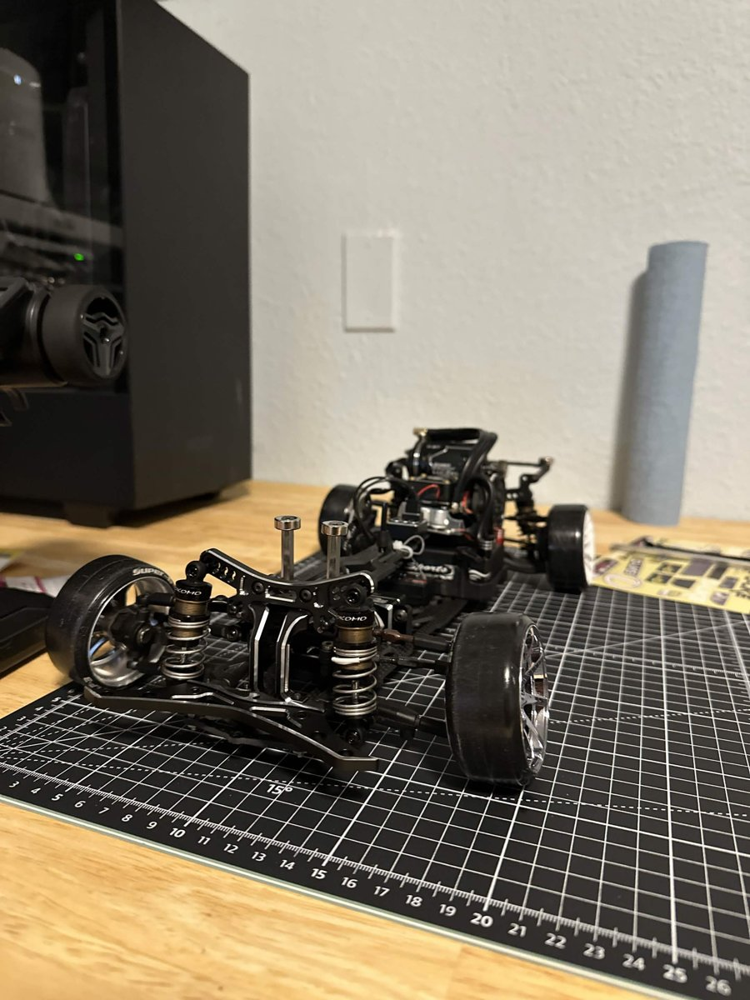

My current chassis
Right now I have three chassis. One is dedicated to indoor drifting on plastic tile and is tuned to be great at it, while the others are set up for outdoor fun on concrete and asphalt. Under each one I put a rough guess of how upgraded it is.
Yokomo RD2

This is the one that started it all. It's the same RD2 I bought as an RTR, but at this point it's barely the same car. It's highly upgraded with carbon and aluminum chassis parts, plus a high end brushless motor and electronics. Pretty much every part on it has been swapped at some point while I was learning what each upgrade actually does.
Upgrade level:
Shibata GRK GS2 Evo
I scored this one off Yahoo Auctions Japan and it already came with lots of upgraded goodies on it. It's pretty cool having a chassis that came straight from Japan, and it's a completely different feel from the Yokomo.
Upgrade level:
Tamiya TT02

The TT02 is originally a 4WD chassis, but mine has been converted to RWD so it can actually drift. It was a fun project to do, but I'm planning on selling it to shorten my collection since I really only need 2 chassis.
Upgrade level:
What I've learned from tuning
The best part about having more than one chassis is being able to compare them. Stuff like spring stiffness, how much steering angle you run, and the gyro gain all change how the car feels on the track. Once you start messing with that stuff you realize how much of your driving style comes from the setup.
I can't wait to get more and more into this hobby and discover more tuning methods so I can keep driving better and better.